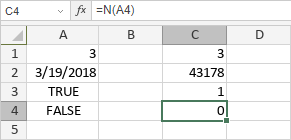

N funkcija
N funkcija je jedna od informativnih funkcija. Koristi se za pretvaranje vrednosti u broj.
Sintaksa
N(value)
N funkcija ima sledeći argument:
| Argument | Opis |
|---|---|
| value | Vrednost koju želite testirati. |
Argument value može biti jedna od sledećih vrednosti:
| Vrednost | Broj |
|---|---|
| broj | broj |
| datum | datum kao serijski broj |
| TRUE | 1 |
| FALSE | 0 |
| greška | vrednost greške |
| Ostalo | 0 |
Napomene
Kako primeniti N funkciju.
Primeri
Slika ispod prikazuje rezultat koji vraća N funkcija.
